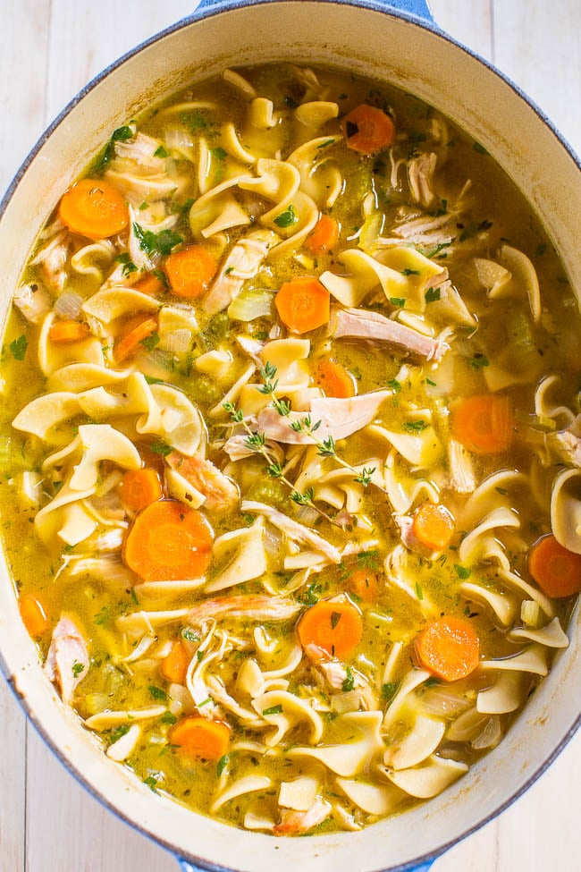

Chicken Noodle Soup

Chicken Noodle Soup Ingredients
- Olive Oil
- Carrots
- Celery
- Sweet Vidalia Onion
- Garlic
- Chicken Broth
- Bay Leaves
- Fresh Thymes
- Dried Oregano
- Wide Egg Noodles
- Shredded Cooked Chicken
- Fresh Parsley
Note: This recipe only takes 30 minutes!
Steps
- To a large Dutch oven or stockpot, add the oil and heat over medium-high heat to warm.
- Add the carrots, celery, onion, and sauté until the vegetables begin to soften.
- Add the garlic and sauté for another 1 to 2 minutes.
- Add the chicken broth, bay leaves, thyme, oregano, pepper, and bring to a boil. Allow mixture to boil gently for about 5 minutes or until vegetables are fork-tender.
- Add the egg noodles and boil the mixture until the noodles are cooked through.
- Add the chicken, parsley, optional lemon juice and boil until chicken is warmed through.
- Remove the bay leaves and serve immediately!